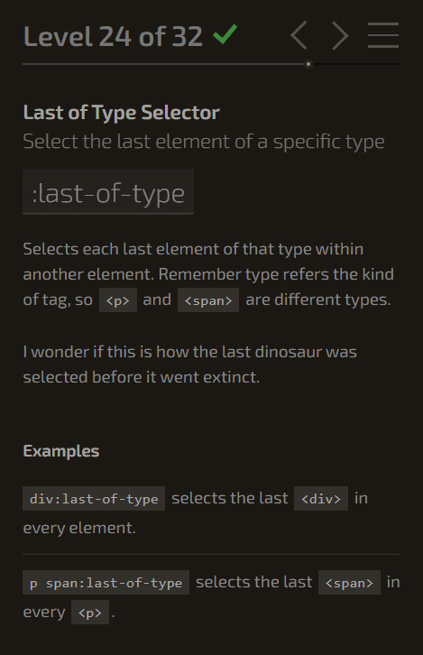

A - Les pseudo-sélecteurs
Exercice 1.0 : CSS Diner

Exercice 1.1 : Les liens externes (vers des sites web extérieurs)
Exercice 1.2 : Tableau
A) Tableau sur GitHub
| Title | Plateforme | Note |
|---|---|---|
| Persona 5 royal | PS4 | 95% |
| The Last of Us Part II | PS4 | 94% |
| Half-Life: Alyx | PC | 93% |
| Animal Crossing: New Horizons | Switch | 90% |
| Ori and the Will of the Wisps | PC & Xbox One | 90% |
| Yakuza 0 | PC, PS4 & Xbox One | 90% |
| Xenoblade Chronicles: Definitive Edition | Switch | 89% |
| Dreams | PS4 | 89% |
| Doom Eternal | PC, PS4 & Xbox One | 88% |
| Legend of Runeterra | PC, Android & iOs | 88% |
B) Tableau sur W3School
Exercice réalisé sur le site de W3School et dont le code a ensuite été copié/collé dans un fichier à part nommé exo_1.2.html:
Exercice sur W3School : Solution exo_1.2
Autres propriétés expérimentées en plus de l'énoncé de départ:
- Ajout d'une Rangée ou TableRow.
- Ajout d'une Colonne ou TableColumn.
- Mise en couleur des fonds de TableHeader et TableData.
- Changement de casse dans TableHeader.
- Liens internes : vers les pages suivantes et précédentes.
Exercice 1.3 : Pseudo-classes
Exercice réalisé sur le site de W3School et dont le code a ensuite été copié/collé dans un fichier à part nommé exo_1.3.html:
Exercice sur W3School : Solution exo_1.3
Exercice 1.4 : Pseudo-éléments
Exercice réalisé sur le site de W3School et dont le code a ensuite été copié/collé dans un fichier à part nommé exo_1.4.html:
Exercice sur W3School : Solution exo_1.4
Autres propriétés expérimentées en plus de l'énoncé de départ.